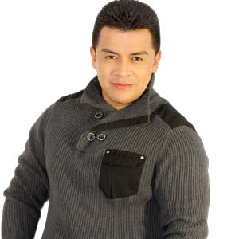
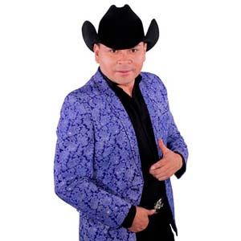

Directorio de Artistas
Ensamble
{kind=link}
Cristian Better
 |
Músico profesional con más de 10 años de carrera, que le he otorgado la participación en agrupaciones como Los Diablitos del Vallenato, Las Estrellas Vallenatas; además del reconocimiento como mejor agrupación vallenata del festival Francisco el hombre en el año 2013; estas experiencias en tarima engrosan su trayectoria artística y lo posicionan como una de las grandes promesas musicales del momento. |
Carolina la 0
{kind=link}
Karval
 |
Cuando se habla de Cumbia Style, inmediatamente se reconoce al artista KARVAL como el creador de este género que sigue conquistando a su público. “Ya llegó” es el título de su nueva canción, un tema que habla de esas fiestas que se preparan cuando va llegar un familiar de nuevo a casa, y que en medio de una parranda se reúnen para festejar en cualquier época del año. |
Máyury Reyna
{kind=link}
Fanny Ospina
 |
Artista tolimense que ha vivido la mayoría del tiempo en el departamento de Santander. Esta nueva artista en el género popular entra al mercado nacional con su tema promocional “Amores que duelen” el cual se encuentra posicionado en las principales emisoras del país . |
Alan García
 |
Artista del género Vallenato, en el 2007 hace el gran lanzamiento de la primera producción discográfica de Alan García titulada “A toda máquina” que costa de 13 canciones todas de un estilo diferente y moderno, como muchos expertos de este folclor lo llaman cuando lo escuchan “Un vallenato alternativo“. |
Martín Saenz y su grupo Yerbabuena
{kind=link}
Koke Castaño
{kind=link}
Stokoff
 |
Artista colombo – alemán con más de 15 años de experiencia musical respaldan su carrera artística con 3 álbumes musicales con canciones conocidas como “Juegos de pasión”, “Sensual”, “Eres perfecta”, teniendo muy buenos comentarios, y lanza su tercer sencillo “Seguiré adelante” de su Álbum “Evolución” la fuerza de su interpretación refleja la autoría y pasión para componer esta melodía, que inspira a luchar cada segundo por el verdadero amor. |
Yenexis
{kind=link}
Luis Miguel Fuentes
 |
Artista vallenato, con gran acogida en el público, reconocido musicalmente por su romanticismo y su voz. Con una trayectoria musical de más de 20 años. Ahora nos presenta su más reciente sencillo “Te voy a olvidar”. |
Juan Manuel Nazmín
 |
Entre sus más recientes éxitos se encuentran “En la Jugada”, “Degenerado”, entre otros que se ubican muy bien en el gusto de la gente, logrando importante participación en los más recientes carnavales de blancos y negros al sur de nuestro país. Sigue en la búsqueda de un estilo muy original con respaldo de grandes músicos creando así, lo que es ahora Evolución nativa una mezcla muy auténtica entre lo popular y el rock, la cual tiene gran aceptación en la juventud y la gente conservadora. |
El Andariego
{kind=link}
Ferando Gil
 |
Fernando Gil se la jugó en grande con el famoso compositor y productor colombiano, Kike Santander quien le apostó a la música popular, para que algunas de sus canciones fueran interpretadas por este artista quien lleva años cantándole al amor y al despecho.“Mi amante” hace parte del álbum “La historia”. |
PYEM
 |
Pyem, se encuentra promocionando su más reciente sencillo “Llamada perdida” ft Alberto Style, canción que está ocupando los primeros lugares en las principales estaciones radiales del país. |
Dr. Velásquez
{kind=link}
Grupo Tornado
 |
Con una gran trayectoria a nivel nacional y profesional. Grupo Tornado graba su primer trabajo discográfico titulado “Me duele el corazón” con canciones de su propia autoría como son: “Estoy celoso”, “El perrito”, entre otros; Actualmente se encuentran promocionando su segundo trabajo donde se desprende su nuevo éxito “Puedes volar”, proyectándose como uno de los grupos jóvenes con mayor futuro del país |
Marco López
 |
Artista del género popular, presenta su último trabajo discográfico, en el cual podemos encontrar temas como “Brindemos por la que se fue” y “Alegre y mujeriego“; letras basadas en experiencias. |
El Cóndor del Oriente
 |
Con Dios y el pueblo. Después del éxito “Tan llena de nada”, llega en este segundo semestre El cóndor del oriente con su más reciente sencillo “El whatsapp”, el cual ha tenido una gran acogida entre el público colombiano y en las principales emisoras del país. |
Luisito Muñoz
|  | El reconocido cantante de música popular, conocido como Luisito Muñoz se encuentra promocionando su mas reciente sencillo “Ángel o demonio” al lado de Fredy Montoya. |
{kind=link}
Sebastián “El Coyote”,
|  | Sebastián “El Coyote”, interprete de importantes temas que han ocupado los primeros lugares en varias estaciones de radio, ha consolidado su carrera como uno de los principales representantes del género Popular-Norteño en Colombia, compartiendo escenarios de todo el país con artistas de talla internacional; ahora, presenta su nueva producción musical de la cual se desprende el tema “Como te olvido”, dando inicio a una gran gira de promoción en Colombia y próximamente en México. |
{kind=link}
Joan Sebastián Burbano
 |
Hoy en día es uno de los artistas más prometedores de la música popular en Colombia ya con su sello y estilo propio de la mano de Studios Jhopers de Cali que en un pasado fue, ha sido y será inmortalizado en la voz de Joan Sebastián Burbano y quien se ve re ejado por la gran acogida del público en los diferentes escenarios del territorio nacional. |
Chris Reivin
 |
A comienzos de 2016 decide grabar de manera más profesional con la casa disquera Digital Records, donde ha grabado dos temas musicales |
Los Hermanos Medina
 |
Los Hermanos Medina, la agrupación tropical número uno del momento en Colombia, conformada en Popayán – Cauca, por un padre y sus hijos. Hoy llegan a la capital del país con su nuevo éxito “Quédate con él”. |
John Jairo Pérez
{kind=link}
Orlando López
{kind=link}
Danny Moreno
{kind=link}
B King
{kind=link}
Arelys Henao
{kind=link}
Ocoyaje
{kind=link}
Anthony Zambrano
 |
Este año lanza su nuevo tema “Voy a conquistarte” de la autoría de Joan Sebastian video que fue rodado en Cartagena de Indias realizado por Rubio studios tema que ha tenido excelentes aceptaciones en diferentes medios de comunicación. |
{kind=link}